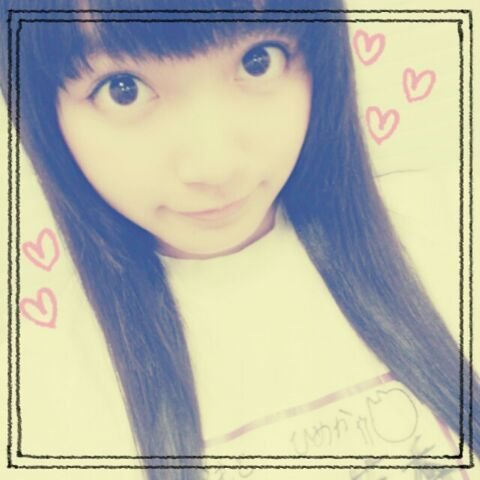
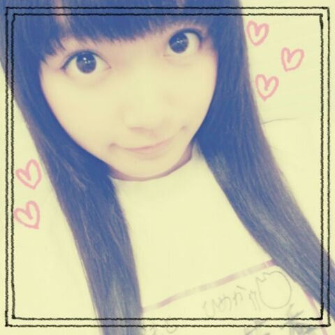

| 2013/08 23 Fri | ひめたん(*>ω<*)そ の330 |
福岡に上陸しました！
雨ー(´・ω・｀)
福岡のみなさん雷とか大丈夫ですか？
この雨雲には広島にも行くんだろうか...
地元広島の隣の隣の県 福岡。
ちっちゃい頃 ままと
ふたり旅したなー懐かしいなー♪
お仕事ではぐるカー発売の時に
ティッシュ配りしたりした以来だから...
やっぱりちょっと前かー
久々福岡。
通りもんをおみやにと頼まれておる福岡。
よーしライブ頑張るぞー(｀・ω・´)

昨日はNOGIBING収録でしたー
オンエアはちょっと先かなー
背景と同化しちゃってるけど体操服ねー＊
もう前みたいなことにならんよう
今度こそはちゃんと自信もって告知するね
覚えてたらね！覚えてたらね！覚えてたらね！
じゃあーここで忘れる前に
○今週日曜 乃木のの 第21回
○今週日曜 乃木どこ
...正直言って自信がないので
今回も告知する気なかったんだけどな(笑)
そんなアイドルがいていいんだろうか！
いけませんねー情けないねー
スタジオにはいるのでとりあえずよかったら♪
そして乃木坂46 結成２周年迎えました＊
おめでとうコメントたくさん
ありがとー(*^ω^*)/
乃木坂は結成２周年で２さいなのか、
それともデビュー２周年で２さいなのか...
去年もそういや悩んだな。
でもどっちも大切な記念日です♪
いつも応援してくださっている
乃木坂ファミリーのみなさん
本当にありがとうございますっ
ファンのみなさんとスタッフさんと
メンバーのみんなと
この２年間でたくさんの出会いがあって
そのひとつひとつが大切な思い出。
いつも思うのが、
乃木坂に入ってなかったら
こんな素敵な出会いもなかったんだなって( ω )
ひめたんは「一期一会」って言葉が
好きなんだけど
本当にその言葉の大切さをいつも感じます
これからも乃木坂46は
まだまだ上を目指して上り坂をかけあがっていく
パワーがあるグループ！
辛いことも時にはあるけど
それが乃木坂46だと思うようになりました
もっともっとたくさん経験を積んで
ビッグなアイドルになるぞー(｀・ω・´)
みなさんもよかったら一緒に上り坂を。
そして ここからはひめきゅんさんへ
いつもひめたんのこと応援してくださって
本当にありがとうございます(*^ω^*)
ひめきゅんさんはひめたんのこと
いつも気にかけてくださって
ちょっとでもひめたんが落ち込んでると
あたたかい言葉をかけてくださったりして
もう本当にお兄ちゃんお姉ちゃんのような
お父さんお母さんのような
彼氏さん彼女さんのような...///
そんな存在です！
最近ひめきゅんさんに仲間入りしたよーて方は
もっとひめたんのこと知ってほしいし
ひめたんも もっと仲良くなりたいな( ^ω^ )
そしてベテランひめきゅんさんだよーて方は
ずっとひめたんのことみててくれてありがとう！
これからもよろしくね( ^ω^ )
ひめたんはなかなかひめきゅんさんたちの
期待に応えられなくて
いつも申し訳なくて正直頭上がらなくて...
長いことお待たせしちゃってごめんなさい。
それでもたまにテレビ出たときとかに
観たよーとか よかったよーとか
もっとひめたんをテレビで見たいな、って
いつも期待してくれてて
その言葉にいつも励まされます
今は学業も活動もどっちも
頑張らなきゃいけない立場だったりします
ひめきゅんさんには
学校があって活動を休まなきゃいけない時も
たまにはあるかもしれないけど
活動を頑張りたいって気持ちは
みんなとおんなじだってこと
わかっていてほしい。
あと１年半！
現役高校生でいられる期間って
貴重なのかもしれないから
大事に過ごそうと思います(〃ω〃)
とか言いつつ最近は
はよ卒業したーいってめっちゃ言ってる(笑)
はやくみなさんの期待に応えられるよう
もっともっと頑張るね！
ひめきゅんさん孝行できる３年目にする！
あ親孝行もきっとします(｀・ω・´)ぱぱまま

写めリクエストありがとー♪
ひめたん × とまとだよー∩^ω^∩
長くなっちゃったから
今回は質問返しは少なめですごめんねー
続きはまた今度まとめてするね♪
雨ー(´・ω・｀)
福岡のみなさん雷とか大丈夫ですか？
この雨雲には広島にも行くんだろうか...
地元広島の隣の隣の県 福岡。
ちっちゃい頃 ままと
ふたり旅したなー懐かしいなー♪
お仕事ではぐるカー発売の時に
ティッシュ配りしたりした以来だから...
やっぱりちょっと前かー
久々福岡。
通りもんをおみやにと頼まれておる福岡。
よーしライブ頑張るぞー(｀・ω・´)

昨日はNOGIBING収録でしたー
オンエアはちょっと先かなー
背景と同化しちゃってるけど体操服ねー＊
もう前みたいなことにならんよう
今度こそはちゃんと自信もって告知するね
覚えてたらね！覚えてたらね！覚えてたらね！
じゃあーここで忘れる前に
○今週日曜 乃木のの 第21回
○今週日曜 乃木どこ
...正直言って自信がないので
今回も告知する気なかったんだけどな(笑)
そんなアイドルがいていいんだろうか！
いけませんねー情けないねー
スタジオにはいるのでとりあえずよかったら♪
そして乃木坂46 結成２周年迎えました＊
おめでとうコメントたくさん
ありがとー(*^ω^*)/
乃木坂は結成２周年で２さいなのか、
それともデビュー２周年で２さいなのか...
去年もそういや悩んだな。
でもどっちも大切な記念日です♪
いつも応援してくださっている
乃木坂ファミリーのみなさん
本当にありがとうございますっ
ファンのみなさんとスタッフさんと
メンバーのみんなと
この２年間でたくさんの出会いがあって
そのひとつひとつが大切な思い出。
いつも思うのが、
乃木坂に入ってなかったら
こんな素敵な出会いもなかったんだなって( ω )
ひめたんは「一期一会」って言葉が
好きなんだけど
本当にその言葉の大切さをいつも感じます
これからも乃木坂46は
まだまだ上を目指して上り坂をかけあがっていく
パワーがあるグループ！
辛いことも時にはあるけど
それが乃木坂46だと思うようになりました
もっともっとたくさん経験を積んで
ビッグなアイドルになるぞー(｀・ω・´)
みなさんもよかったら一緒に上り坂を。
そして ここからはひめきゅんさんへ
いつもひめたんのこと応援してくださって
本当にありがとうございます(*^ω^*)
ひめきゅんさんはひめたんのこと
いつも気にかけてくださって
ちょっとでもひめたんが落ち込んでると
あたたかい言葉をかけてくださったりして
もう本当にお兄ちゃんお姉ちゃんのような
お父さんお母さんのような
彼氏さん彼女さんのような...///
そんな存在です！
最近ひめきゅんさんに仲間入りしたよーて方は
もっとひめたんのこと知ってほしいし
ひめたんも もっと仲良くなりたいな( ^ω^ )
そしてベテランひめきゅんさんだよーて方は
ずっとひめたんのことみててくれてありがとう！
これからもよろしくね( ^ω^ )
ひめたんはなかなかひめきゅんさんたちの
期待に応えられなくて
いつも申し訳なくて正直頭上がらなくて...
長いことお待たせしちゃってごめんなさい。
それでもたまにテレビ出たときとかに
観たよーとか よかったよーとか
もっとひめたんをテレビで見たいな、って
いつも期待してくれてて
その言葉にいつも励まされます
今は学業も活動もどっちも
頑張らなきゃいけない立場だったりします
ひめきゅんさんには
学校があって活動を休まなきゃいけない時も
たまにはあるかもしれないけど
活動を頑張りたいって気持ちは
みんなとおんなじだってこと
わかっていてほしい。
あと１年半！
現役高校生でいられる期間って
貴重なのかもしれないから
大事に過ごそうと思います(〃ω〃)
とか言いつつ最近は
はよ卒業したーいってめっちゃ言ってる(笑)
はやくみなさんの期待に応えられるよう
もっともっと頑張るね！
ひめきゅんさん孝行できる３年目にする！
あ親孝行もきっとします(｀・ω・´)ぱぱまま
写めリクエストありがとー♪
ひめたん × とまとだよー∩^ω^∩
長くなっちゃったから
今回は質問返しは少なめですごめんねー
続きはまた今度まとめてするね♪

 ひめたんビームと、
ひめたんビームと、
あしゅのとりゃぁぁぁの威力は
どっちが強いんですか？
その質問は
世界の規律を崩す質問なので
答えれませーん(c)
by あしゅりん(c)
 ひめたんはこのままのわたしと
ひめたんはこのままのわたしと
ショートカットなわたし
どっちがいいと思う？
ひめたんはロングのおにゃーのこ
好きだけどなー
ロングだといろんな髪型できるしね☆
でもショートも見てみたい気するなー...
おかおちっちゃいからショートも似合うよ///
ひめたんはニキビとかできたことないん？
でっきっるっよー！
でも一時期よりは落ち着いたかなー♪
発音は「ひめた↑ん」と同じように
「ひめにゃ↑ん」でいいのかな？
そうだねーないすな提案ありがとー///
ひめにゃーんって
呼んであげてくださーい◎
バカリボンはフリじゃないですっ！
最近このやりとり好きだなー///
そんな川後Pは
目が合うたびウインクしてきます
これが結構上手いんだ(戦慄)
(＊´・ω・＊)
コメント(301)
2013/08/23 00:30